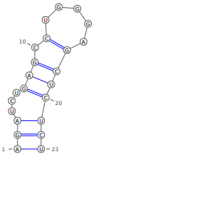
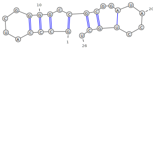

About
Documentaion
Documentation for the code can be found here
Results
Visualizaion of the algorithm to find the secondary structure of rna as documented in 'Algorithm Design by Eva Tardos and Jon Kleinberg' is successful. The resulting structure is saved as a svg, which can be resized and rotated without loss of precision. This was done in C language with the support from Varna Tool.
Comparison between our implementation's results and structures at rnacentral
First is our Visualizaion and next is the real structure. Differences have been highlighted in the following text. RNA Sequence identification code is also mentioned in the headings
URS00006569A0: GGCGAAGCCCGCCUGUGCGGGCUA

Structures match perfectly.
URS000080E21C: CUUGCUGAGGUGCACACAGCAAG
The real structure contains 1 pair less than the optimal solution (between 11(U) and 16(A)).
URS0000A76371: AGAUCUGAGCCUGGGAGCUCUCU
The real structure is quite close to the one visualized, both are optimal. Choice between different optimal structures cannot be found in code. Only difference is the use of 11(C) instad of 10(C) for one pairing, which is a design choice in the program.
URS00002AB26F: AAACCGUUACCAUUACUGAGUUU
The real structure is quite different from the optimal one, multiple possible pairings are missing.
URS000064F01F: CUUUCAAUCCUCUUCUUGAGAUUC
The real structure is quite close to the one visualized, both are optimal. Choice between different optimal structures cannot be found in code.
Issues in Coding
Some of the main issues that arose while coding the project were as follows:
- Choice Between Optimal Solutions: Multiple Solutions(Pairings) exist to reach the optimal solution. Choosing among them remains is remains a design choice. We made the choice to pick the pair with bases furthest apart among similar choices. This choice is consistent on most real life secondary structures from rnacentral
- Minimizing Time & Space Complexity: issue is reached while minimizing space and time complexity. This lead to a trade-off at most points as minimizing one lead to increase in other. This was solved by applying base case checks and pre-processing (like trimming spaces), then reducing sizes of arrays accordingly.
- Choice of Visualizaion Method & Tool: There are multiple formats to show the secondary structure of RNA, like linked graphs, circular graps etc. We went with the one that felt the most natural, namely the classical structure. But, this is also the one most tricky to visualize. Similarly among the multiple visualization tools, we chose VARNA, as it was the one with the simplest command line interface and best results.
Algorithm Analysis
A high-level overview of the dynamic programming algorithm for RNA folding:
- Initialization: Set up a matrix to store the optimal folding score for each subsequence of the RNA sequence. (O(n2) time)
- Relation: Using a recurrence relation determine the optimal score for a given subsequence based on smaller, previously solved subsequences.(O(n) time)
- Matrix Filling: Fill the matrix using the recurrence relation, starting from the smallest subsequences and building up to the entire sequence.(O(n2) time)
- Traceback: While filling the matrix or after that, trace back from the each cell to reconstruct the optimal folding structure.(O(n2) time)
Recurrence Relation: OPT(i, j) = max{OPT(i, j-1), maxi≤t≤j(1+OPT(i, t-1)+OPT(t+1, j-1))}.(O(n) time)
Total Time Complexity: (Step 1) + (Step 2)*((Step 3) + (Step 4)) = O(n3) time.
Timing Analysis
For timing analysis values, check included excel sheet. Resulting graphs are as follows:
References
- Algorithm Design by Eva Tardos and Jon Kleinberg
- Structures from: RNA Central
- Visualization tool support: VARNA
- Documentation tool:Doxygen
Team Members
Team Code: C2
- Aryan Gupta 2021A7PS0162H
- Subal Tankwal 2021A7PS1407H
- Kshitiz Agarwal 2021A7PS1818H
- Soumya Choudhury 2021A7PS1674H